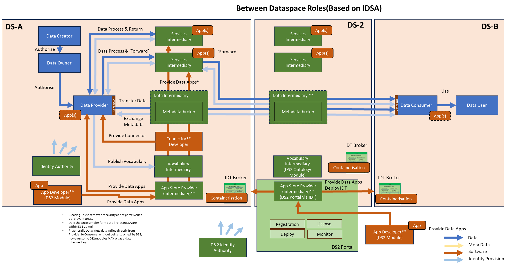
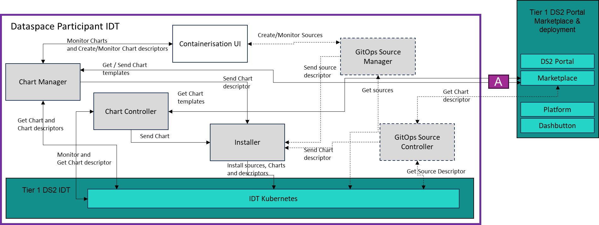

CONT - Containerisation
Powered by
| Project Links |
|---|
| Software GitHub Repository https://github.com/ds2-eu/containerisation |
| Progress GitHub Project https://github.com/orgs/ds2-eu/projects/7 |
General Description
To allow easy and automated packaging and deployment of modules on the IDT Kubernetes runtime subcomponent environment. The containerisation module leverages on custom Helm Chart descriptors to automatically convert them into full Kubernetes Helm Charts representing the module, based on standard base templates located in the DS2 Portal Marketplace. The Helm Charts are then deployed on the IDT Module.
The Containerisation module is a core module to the IDT Broker module that enables deployment of all the DS2 modules in the IDT Broker Kubernetes sub-component. The Containerisation module uses Helm Chart standard base templates describing a DS2 module. Those templates are provisioned by the IDT Broker module and provide the standard for DS2 module deployment in IDT Broker. Base templates are stored in the DS2 Portal Marketplace. Then, when uploading a DS2 module by module developers, to the DS2 Portal Marketplace, a custom Helm Chart descriptor that includes values for those base templates needs to be provided with the module. The Containerisation module will use the descriptor together with the base templates to create the Helm Chart for the DS2 module during deployment time on the IDT Broker.
The Containerisation module can work in two different modes:
- The standard DS2 working mode: developers upload module Helm Chart descriptor to the DS2 Portal Marketplace. Participants use the IDT Broker Kubernetes UI to deploy the descriptor on the IDT. The Containerisation module is triggered when detecting the deployment of that descriptor, retrieves the base templates from the DS2 Portal Marketplace, creates the full Helm Chart and deploys it on the IDT Kubernetes Runtime sub-component
- The GitOps way: automatic deployment of the Helm Chart descriptor is triggered by the Source controller sub-component upon detecting a change on the descriptor in the DS2 Portal Marketplace. Then as in the previous mode, the Containerisation module, create the full Helm Chart and deploys it on the IDT. This could be the deployment mode of the DS2 Portal
In both cases, the only difference is how the Helm Chart descriptor is deployed on the IDT either by the participant manually deploying the descriptor, or being automatically deployed by the Source Controller sub-component.
Architecture
The figure below represents the module fit into the DS-DS environment. 
The figure below represents the actors, internal structure, primary sub-components, primary DS2 module interfaces, and primary other interfaces of the module. 
Component Definition
This module has the following subcomponent and other functions:
-
ChartController: The ChartController is a Kubernetes controller, following the Kubernetes controller pattern which keeps track of a new Kubernetes custom resource definition - the “HelmChartDescriptor”. When changes are detected on a descriptor, ie. addition, update, the Controller connects to a configured location ie. GitHub repository, to download the corresponding Helm Chart base templates. Then, together with the HelmChartDescriptor, the Chart Controller will create a full Helm Chart describing the module. This Helm Chart will be deployed into the IDT Kubernetes Runtime subcomponent using the Installer component.
-
ChartManager: The ChartManager is mainly used to monitor the Helm Charts and HelmChartDescriptors deployed in the system. It will query the IDT Module’s Kubernetes subcomponent to retrieve current Charts and descriptors. The Chart Manager can also be used to create a HelmChartDescriptor using some input parameters and install it via the Installer component. Once installed, the ChartController will detect the new ChartDescriptor and will convert it to a Chart deploying it back into the IDT Module’s Kubernetes subcomponent.
-
Installer: This is the component responsible for installing Helm Charts and HelmChartDescriptors in the IDT Kubernetes subcomponent. It will receive the corresponding Charts and HelmChartDescriptors and will apply them in the IDT Kubernetes subcomponent. The Installer also takes care of installing new Sources created by the Source Manager component.
-
Containerisation UI: This is the main module UI that allows users to monitor current existing Charts, ChartDescriptors and Sources in the system. Users will have an overview of what is installed in the system and its current status regarding to those specific resources. The UI can also be used to create, update or delete ChartDescriptors via the ChartManager and Sources via the Source Manager.
-
GitOps Source Controller: The Source Controller, similar to the ChartController, is a Kubernetes controller that keeps track of the custom resource definition Source. A Source mainly represents a reference to a repository where ChartDescriptors are stored. The Source Controller monitors the status of the Source and reacts to changes by reflecting those changes in the IDT Kubernetes subcomponent. The Source Controller is an optional subcomponent, and users can just install the ChartDescriptors using the IDT or via Kubernetes standard kubectl.
-
(DS2) GitOps Source Manager: The Source Manager, similar to the ChartManager is mainly used to monitor the Source in the system and is customised to DS2. It can also be used to create, update, and delete new sources that will be installed via the Installer component. As the Source Controller, this is an optional component.
-
Tier 1 Service Stack for Marketplace and deployment and API: The full stack will be implemented as generically described elsewhere in this document. Exceptions: This module runs in the IDT and uses the IDT Kubernetes subcomponent for Chart and ChartDescriptor installations. The DS2 Portal Marketplace component and its repository system is used to store the Chart base templates. Since the DS2 Portal is also a DS2 module, it is deployed and run on the IDT, so Containerisation module can also be used for the DS2 Portal and other intermediary services.
Screenshots
The Containerisation UI development has not yet been started, so no screenshots.

Commercial Information
| Organisation (s) | License Nature | License |
|---|---|---|
| ICE | Open Source | Apache 2.0 |
Top Features
- Kubernetes Native: The CONT module is a Kubernetes native solution based on open-source system Flux and The GitOps Toolkit
- Kubernetes Application Deployment Control: Provides control to Kubernetes administrators or SREs over what and how a module or application is deployed on a given Kubernets cluster ie. IDT2.
- Kubernetes Application Abstraction: The CONT module abstracts developers from the Kubernetes complexity when creating a Kubernetes application, leveraging on a templating system based on Helm Charts and Flux HelmRelease CRD
- Helm Chart Templates: Ability to create Helm Chart templates for different types of applications
- Helm Release CRDs Templates: Based on the HelmRelease CRDs from Flux, the CONT module enables the creation of HelmRelease templates that will make use of the Helm Chart Templates
- Application Management using API: Manage application (module) lifecycle (create, install, uninstall, delet) using the CONT Chart Manager API
- Containerisation UI: Manage the Containerisation module using a modern web based UI
- Operator vs Developer View: Access the Containerisation module features with different views depending on the role Operators vs Developer
How To Install
The Containerisation module will be part of the IDT installation, but a standalone installer is so far provided in order to be able to work with it, which installs Flux Helm and Source Controllers in order to create the Helm Chart from the HelmRelease and Chart templates.
Requirements
The IDT or a Kubernetes cluster is required.
Resources:
Software
Containerisation module so far installs these software utilities and specific tested compatible versions:
- Flux Helm Controller (Chart Controller + Installer)
- Flux Source Controller (Source Controller)
- Flux Notification Controller (default)
- Flux Kustomization Controller (default)
To Be Implemented: * Chart Manager * Source Manager * Containerisation UI
Summary of installation steps
-
Clone the repo containerisation
-
Install the Containerisation module by running the installfluxghorg.sh script
Detailed steps
-
Clone the repo containerisation
-
Install the Containerisation module by running the installfluxghorg.sh script : So far the Kubernetes controllers are available, which will deploy a template helm chart from a helmrelease CRD
github_token: a GitHub user token
github_organisation: a GitHub organisation: this will be in a later stage the organisation from the Marketplace ie. ds2-marketplace where modules are stored
org: this is a repository in the GitHub organisation: this will be in a later stage a repository of the organisation id of the participant as registered in the Portal. The repository is created via the Marketplace and the acquired modules will be located in that GitHub repository -> This is linked to the Marketplace purchase process
How To Use
The Containerisation UI is not available at the moment of writing this documentation and the templates for Module Helm Charts and Base Helm Charts are being developed. Still some guidelines on how to use the module standalone can be provided.
Once the controllers have been deployed we need to create a source resource to pull the module template charts from a GitRepository. The template charts will be used to create later the real module helm charts. Those template helm charts will be provided by the Portal and Marketplace. This is an example located in the Containerisation repository at https://github.com/ds2-eu/containerisation.git of a GitRepository.
apiVersion: source.toolkit.fluxcd.io/v1
kind: GitRepository
metadata:
name: ds2catalog
namespace: ds2
spec:
interval: 1m
url: # Add here the url of a git repo - so far public repository, at a later stage configuration for private repositories will be provided
ref:
branch: main
To create the GitRepository resource copy the example into gitrepository.yaml or pull the file from the repository and run
With the GitRepository created, two more resources are needed. First, the template Helm Charts which should be stored in the GitRepository repository.
The template Helm Chart is still not available at the moment.
Second, the base Helm Charts which are based on HelmRelease CRDs from flux. This is a simple way of refering to a Helm Chart and deploying it into a Kubernetes cluster. The template base Helm Chart is still not available at the moment. An example of a HelmRelease can be found at the containerisation repository
apiVersion: helm.toolkit.fluxcd.io/v2
kind: HelmRelease
metadata:
name: ds2module
namespace: default
spec:
interval: 10m
chart:
spec:
chart: ./nginxapp3
version: '1.0.0'
sourceRef:
kind: GitRepository
name: ds2catalog
namespace: ds2
interval: 10m
values:
welcome_message: "This is the zdzw nginxmessage helm chart Welcome Message"
module1:
image:
privateRegistry:
registryPasswd:
The HelmRelease resource is simple way to refer to a Helm Chart with a single yaml file, being able to override the values defined in the Helm Chart.
In this case, the example refers to a chart named nginxapp3 located in the GitRepository created in the previous step, and is overiding the values for welcome_message, module1.image.privateRegistry and module1.image.registryPasswd.
To deploy the nginxapp3 Helm Chart using the HelmRelease resource, run
Other Information
No other information at the moment for Containerisation
OpenAPI Specification
To Be Done: No API
Additional Links
Video https://youtube.com/cont
Flux https://fluxcd.io/
Containerisation Repository https://github.com/ds2-eu/containerisation (Private Link for Project Members)